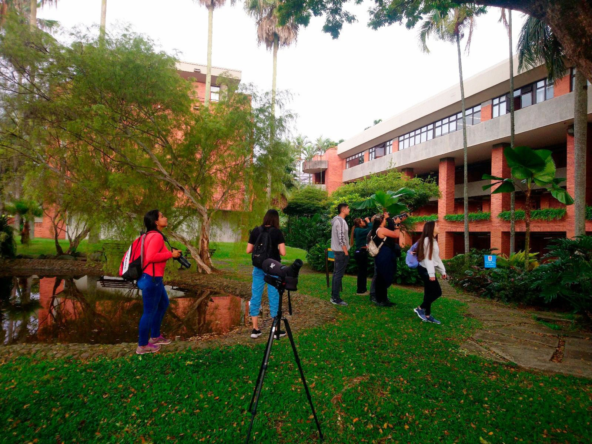
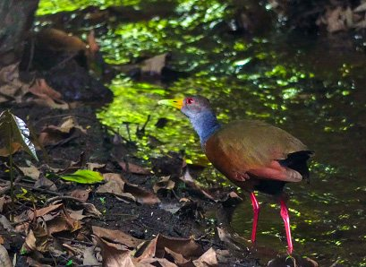
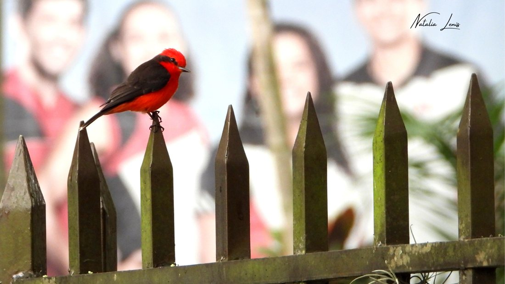
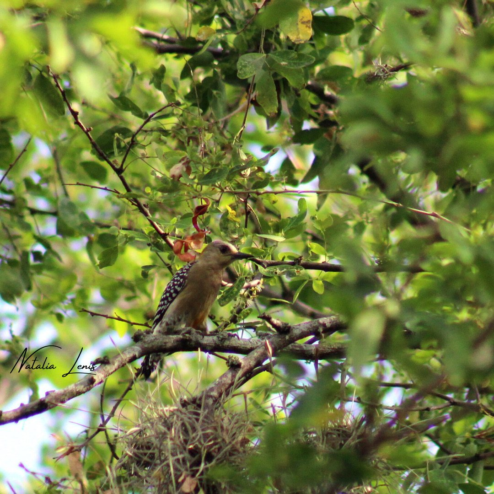

Universidad Autónoma de Occidente · Cali
Un campus.
84 formas de
mirar el cielo.
Entre jardines, senderos y árboles del sur de Cali, una comunidad alada encuentra un lugar para vivir.
La vida del campus,
vista desde el aire.
registradas
de aves
documentados
Cifras de la guía ilustrada UAO · primera edición 2023
Atlas de campo · Valle del Cauca
Aves que hacen
hogar aquí.
Busca por nombre, familia o una señal que recuerdes. Cada ficha reúne la información disponible en la guía del campus.
No encontramos esa ave
Prueba otro nombre o limpia los filtros para volver a mirar.
Catálogo en construcción. Esta muestra digitaliza una parte de las fichas de la guía de 2023. La relación completa, nomenclatura y descripciones requieren revisión editorial antes de cargar las 84 especies reportadas.

Fotografía: equipo de campo UAO · guía 2023CAMPO01—23
Desde 2019 · Escuela de Turismo
Un refugio
entre ciudad y río.
El campus sostenible de la UAO forma parte del paisaje del río Cauca y del bosque seco tropical. Sus jardines y zonas verdes ofrecen alimento, descanso y refugio para la avifauna del sur de Cali.
Esta guía nace de jornadas de monitoreo y de una invitación sencilla: aprender a mirar, escuchar y cuidar la vida que comparte nuestro campus.
Ver escenas de campola biodiversidad
Cuaderno visual
Un instante
en el follaje.
Algunos encuentros registrados en la guía ilustrada del campus. Las fotografías se muestran como parte de la galería general; consulta cada ficha para revisar su identificación.



Fotografías: Juan Manuel Quintero, Natalia Lenis Sánchez y Diana Carolina Campo Daza · Guía UAO (2023)
Trivia de campo · 5 preguntas
¿Reconoces
a estas aves?
Elige la característica que mejor describe a cada especie. Verás la respuesta al instante y, al final, un repaso con la clave completa.
La guía sale de la página
Mira de cerca.
Sin perder el vuelo.
Una experiencia preparada para explorar una especie en el espacio que te rodea. El modo de cámara de esta versión es una demostración visual; no detecta superficies ni sustituye una escena desplegada en 8th Wall.
Una publicación UAO · primera edición 2023
Observar también
es conservar.
Contenido basado en Guía ilustrada de las aves del campus de la Universidad Autónoma de Occidente. Autores: Germán Morales Zúñiga y Natalia Lenis Sánchez. La guía refiere una alianza con Wiki Aves de la Universidad Icesi.
Explorar Wiki Aves IcesiSe preservan las limitaciones y discrepancias observables en la fuente; la revisión taxonómica y de derechos del material gráfico corresponde a la siguiente fase.